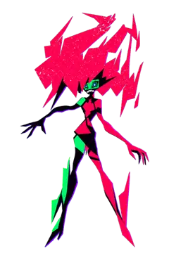
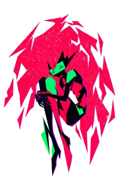
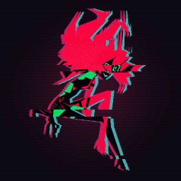
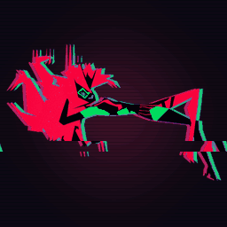
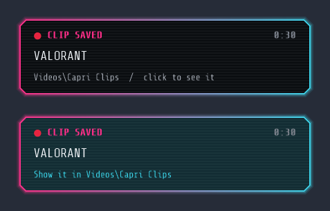
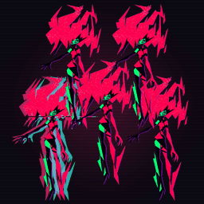

Windows Your PC
- Windows 10 and 11, 64-bit
- One installer, no admin
- Starts with Windows if you want
- Updates herself every 3 hours
> you: can we talk?
CAPRI: Yeah choom. Type here if you need a hand.
> you: hi
CAPRI: Hey choom! Net's been quiet, too quiet. Time to stir up some trouble.
ctrl + alt + c to unseat Capri
Bring Capri back to life on your desktop! :)
Windows Mac Intel Mac Linux Linux AppImage Quest VR
v0.8.4 6 Nov Free
Capri is an unofficial fan project and is not approved or endorsed by CD PROJEKT RED, the anime's rights holders or its voice actors.
Tiny to Giant any monitor
She sits on your windows, your taskbar, your icons and the bottom of your screen.


Replies in 80 languages
Type here for setup help or just say hi. Install her chip to talk out loud on your PC.
> you: hi capri
CAPRI: Hey choom. Need a hand setting me up?


Esc stops her
Ask and she does it: opens apps, games and sites, plays your music, clips your game. Bigger jobs get her own pink cursor.

Beta Windows only

Ask for clones and they keep multiplying. They talk to each other, steal your cursor and drag your windows around. Hold Esc and it all goes back.
Live from GitHub and her download counter
Free no admin
v0.8.4 6 Nov
> you: can we talk?
CAPRI: Yeah choom. Type here if you need a hand.